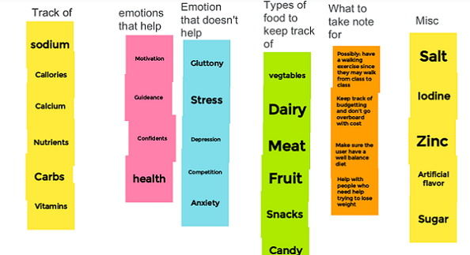
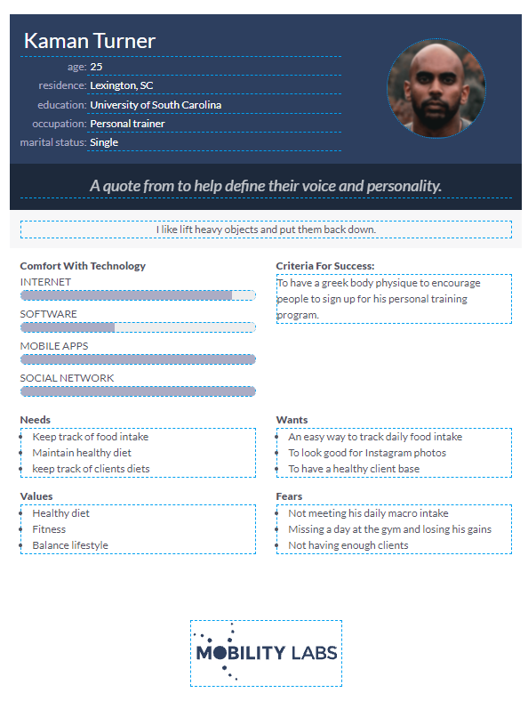

Problem Statement

People are having problems with maintaining their food intake while traveling a long distance (mostly by foot) to get to their classes. I want to solve how we can manage what type of food we eat and how much we should eat.
Affinity Diagram
Our groups plan on how to track a healthy diet.
Personna: Four different personnas for diet tracker
A personna of someone who tracks their food intake.
StoryBoard: Four different storyboards

A storyboard of someone finding our food intake app.
Sketches

A concept of how the application may look.
Paper Prototype

A paper walkthrough of the app.
Proto.io prototype

An interactive walkthrough of the app.